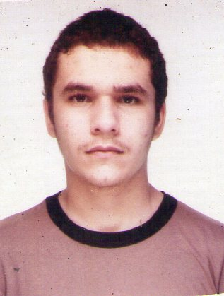

Abelardo Vieira Mota 
Brasileiro, Solteiro, 21 anos
Rua Naturalista Feijó, 53
Monte Castelo – Fortaleza – Ceará
Telefone: 8530211281 Celular: 8587139588 / abbbekgb@gmail.com
Objetivo :
Estágio, trainee.
Formação :
- Graduação em andamento em Computação.
Universidade Federal do Ceará, UFC, Brasil.
Início em 2008.1.
Previsão de conclusão 2012.2.
Áreas de conhecimento :
- Conhecimento básico nas linguagens: C/C++, PHP, Javascript, HTML, CSS, SQL.
- Conhecimento intermediário nas linguagens: Java, Ruby.
- Conhecimento básico no sistema MySQL.
Informações adicionais
- Monitor remunerado das disciplinas [Fundamentos de Programação] e [Programação] em 2009.
- Bolsista de Iniciação Científica na área [Extensões da Lógica Clássica de Primeira Ordem:Modelos, Provas e Complexidade] em 2010.
- Atualmente estagiário na empresa Dataprev, com início em 03/2011. Trabalhando com as tecnologias EJB, JPA, JSF e Oracle database.